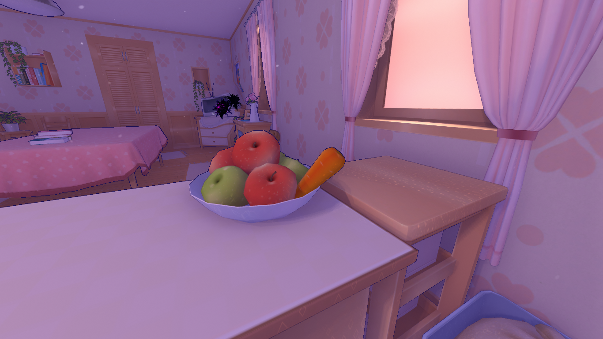
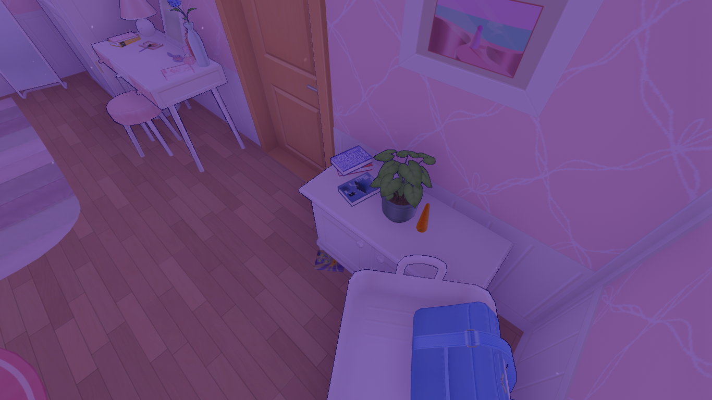
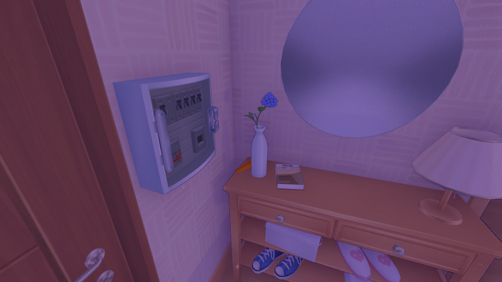
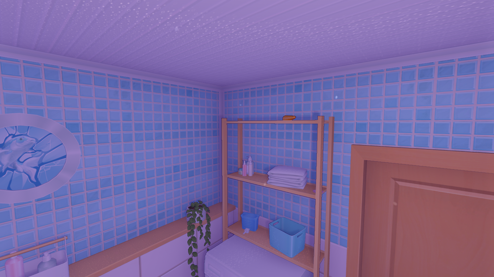
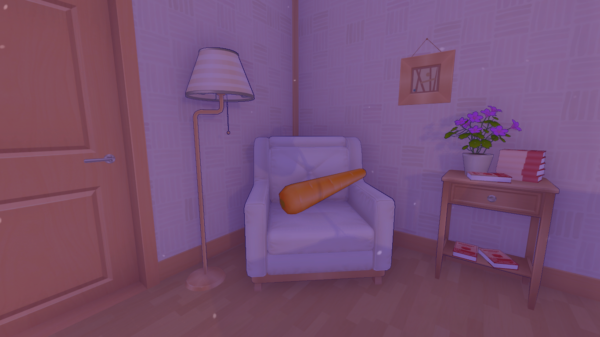
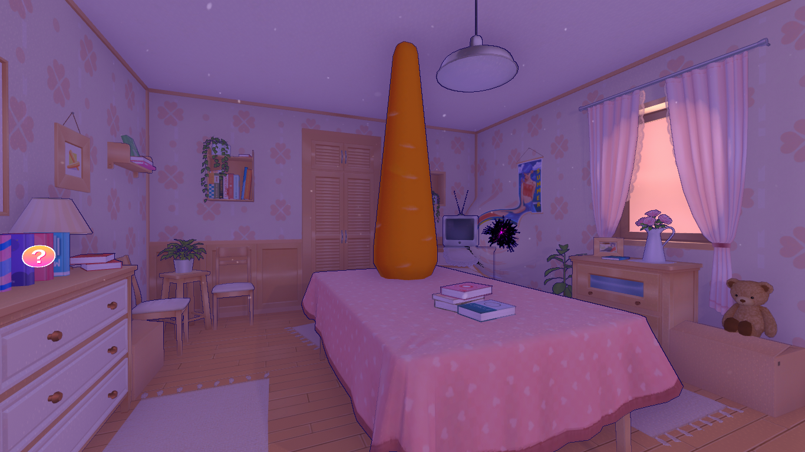
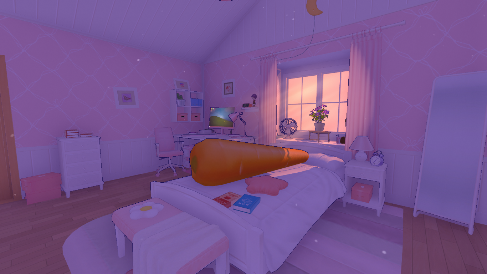

| Glitching Carrot | Location |
|---|---|
| Carrot #1  |
Start by heading to the kitchen. The first Glitching Carrot can be found in the fruit bowl on the kitchen counter. |
| Carrot #2  |
After the first Carrot disappears, make your way to Mila’s bedroom. It is located near the potted plant beside the bathroom door. |
| Carrot #3  |
Next, traverse through the living room towards the front door and check the vase situated on the table next to it. |
| Carrot #4  |
To unearth the fourth Carrot, resolve two glitches. After tackling the first glitch in the kitchen, enter the bathroom. Following Mila’s reprimand, exit and re-enter to address the second glitch. Before you do, glance at the top shelf in the closet adjacent to the bathroom door for a hidden Player Cartridge, and then collect the Carrot after solving the bathroom glitch. |
| Carrot #5  |
Once you’ve collected Carrot #4, head to the living room where you will find the next Carrot resting on the armchair beside the bedroom door. |
| Carrot #6  |
Return to the kitchen, where the sixth Carrot will be located on the kitchen table. |
| Carrot #7  |
The final Glitching Carrot is positioned on Mila’s bed in her bedroom. |